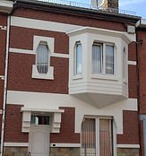
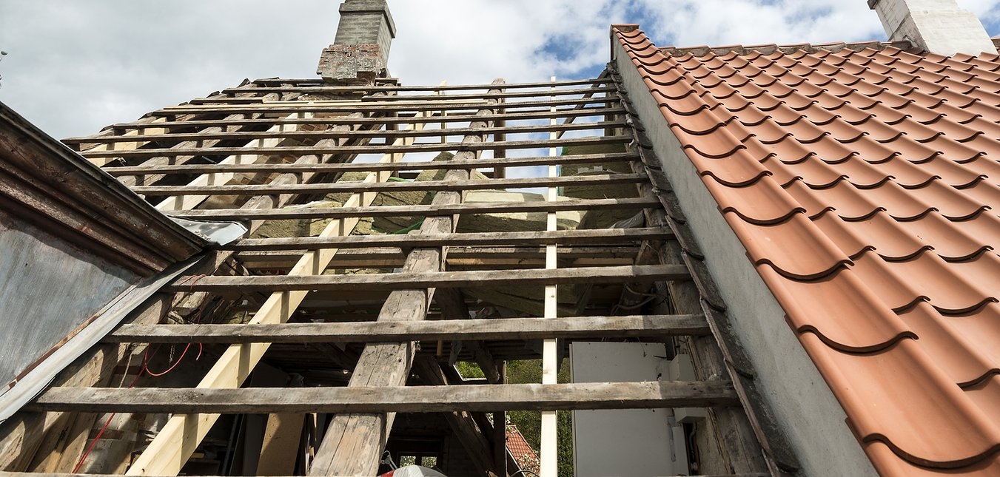
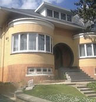
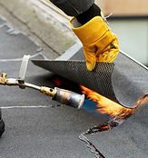
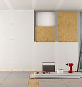
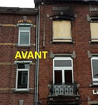
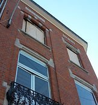
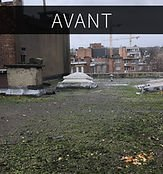
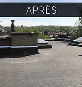
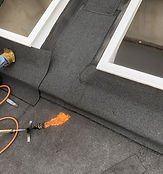

Rénovation et nettoyage de façades
Une façade propre et saine valorise votre bien et le protège dans la durée.
- Nettoyage de façades
- Rénovation et remise en état
- Travaux de façade sur bâtiments existants

Entreprise familiale, nous étudions votre chantier, choisissons les bons matériaux et réalisons les travaux, du simple dépannage au chantier complet.
Depuis plus de 30 ans, Dubois Père & Fils réalise à Liège des travaux de rénovation sur les façades, les toitures et les bâtiments. Nous sommes attentifs à la satisfaction de chaque client.
Installation, rénovation, transformation ou dépannage : quelle que soit l’ampleur du chantier, nous prenons en charge l’étude complète des travaux.
Parlons de votre projet

Une façade propre et saine valorise votre bien et le protège dans la durée.

Réparation, rénovation ou remplacement : nous vérifions la charpente et la couverture avant de vous proposer la meilleure solution.

Nous accompagnons vos transformations, de l’étude des travaux au choix des matériaux, pour un résultat durable.
Deux chantiers réalisés à Liège : une façade remise en état et une toiture plate refaite.




Nous analysons votre situation et vos besoins sur place.
Vous recevez une proposition claire, avec le choix des matériaux.
Nos équipes réalisent le chantier, du dépannage au projet global.

Devis gratuit, du simple dépannage au chantier global.
Demander un devis gratuitOui, nous établissons un devis gratuit pour tous vos travaux de façade, de toiture et de rénovation à Liège.
Oui. Nous intervenons quelle que soit l’ampleur des travaux, du simple dépannage au chantier global.
Nous étudions l’ensemble des travaux avec vous et vous proposons les matériaux les plus adaptés à votre situation.
Nous sommes ouverts du lundi au vendredi de 8 h à 18 h et le samedi de 9 h à 13 h. Les dépannages urgents restent possibles en dehors de ces horaires.
Décrivez votre projet, nous vous répondons rapidement.
| Lundi – vendredi | 8 h – 18 h |
| Samedi | 9 h – 13 h |
| Dimanche | Fermé |